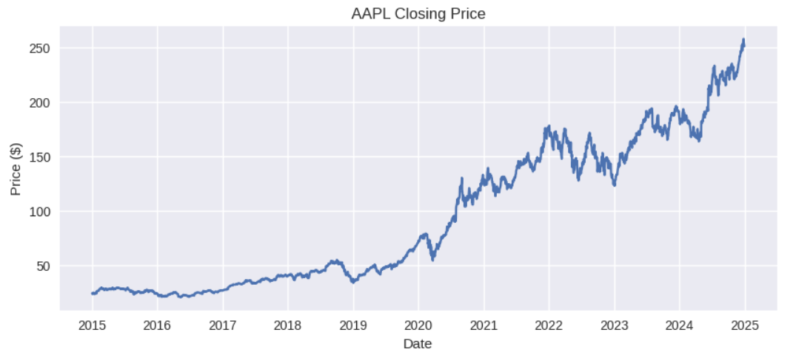
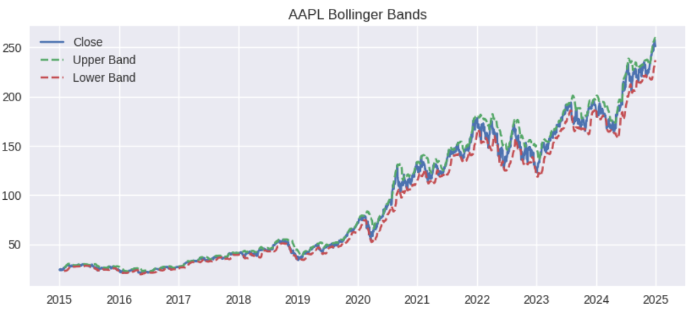
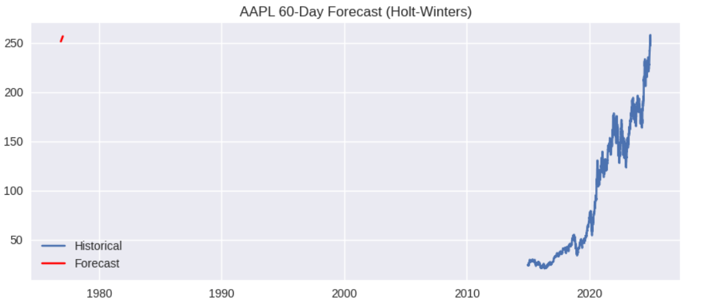
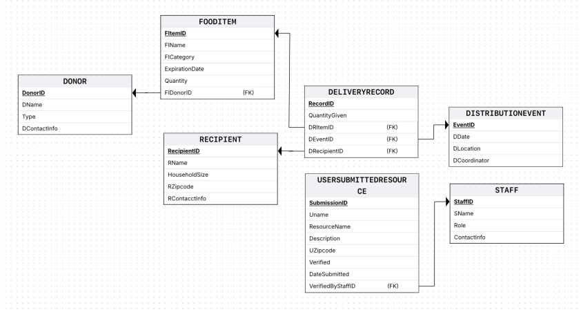
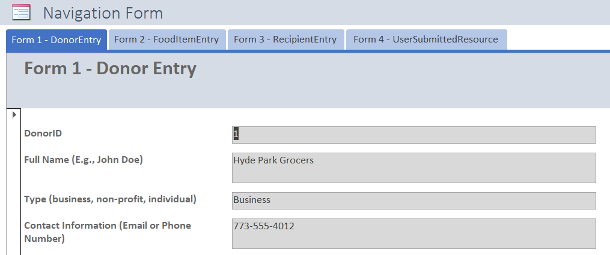
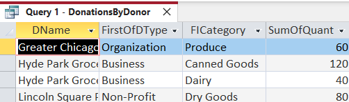
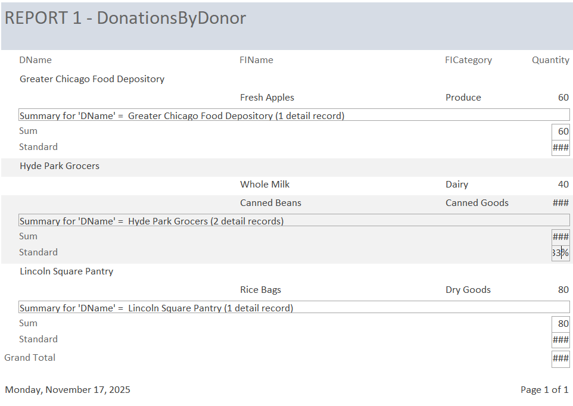

Early-career data analyst specializing in SQL, Python, and applied analytics. I transform raw data into clear insights through forecasting models, relational databases, and analytical dashboards that support better business decisions.
I'm a Master's candidate in Business Analytics at Loyola University Chicago with experience analyzing complex datasets and building practical data solutions. My work focuses on transforming messy or fragmented data into structured systems that support reporting, forecasting, and decision-making.
I enjoy projects that connect technical analysis with real-world business problems. My experience includes designing relational database systems, building forecasting models in Python, and developing analytical tools that help organizations better understand performance, demand patterns, and operational trends.
My background in psychology shaped how I approach analytics—asking thoughtful questions, identifying patterns in behavior, and translating complex information into insights people can actually use. I'm currently seeking entry-level data, business, or operations analyst roles where I can apply analytics to practical business challenges.
ResumeDeveloped a Python-based time series forecasting workflow using historical equity data to model market trends and generate a 60-day forward forecast. The analysis includes volatility evaluation and technical indicators to highlight trend shifts, uncertainty intervals, and periods of elevated risk. This project demonstrates forecasting, analytical reporting, and data visualization for decision-focused insights.
Source CodeDaily closing price with moving averages to show long-term and short-term momentum.

Volatility visualization using dynamic upper and lower bands around the moving average.

Forecast output with trend and uncertainty intervals to support scenario-based analysis.

Designed and implemented a relational database system to support tracking of donations, inventory distribution, and recipient activity for a simulated community food resource network. The system centralizes donor, inventory, and distribution data using normalized tables, custom entry forms, automated SQL queries, and formatted reports to improve tracking and operational reporting.
Full DocumentationThis diagram shows the structure of the CFFN database, including donors, recipients, food items, and distribution events.

The main menu form provides quick access to donor, food item, recipient, and community resource entry forms.

This query summarizes food contributions by donor name, type, category, and total quantity donated.

A formatted report showing individual donations and summary statistics, used for reporting and community documentation.

Developed a content-based recommendation system using TF-IDF vectorization and cosine similarity to identify similar Netflix titles based on textual metadata. The application is deployed in Streamlit and demonstrates practical machine learning applications in personalization, content discovery, and user engagement.
See Live Source CodeInterested in discussing analytics, data projects, or potential opportunities? Feel free to reach out.
Email Me